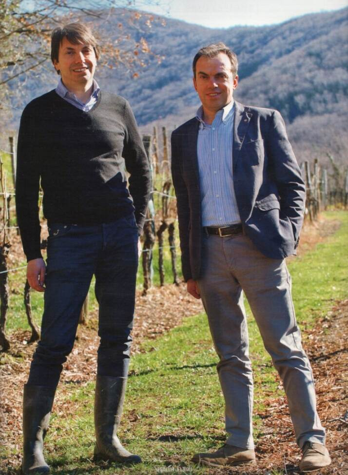
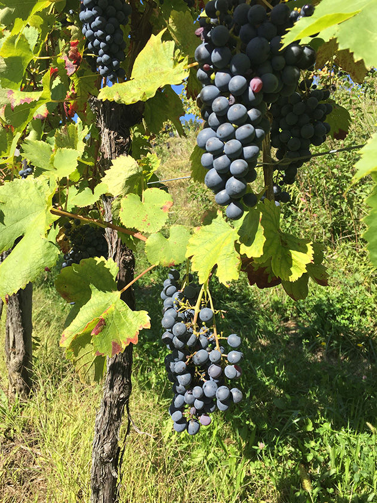
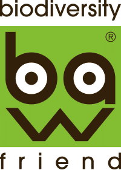

{{ t.storyKicker }}
{{ t.storyTitle }}
Nel 1970 è risorta qui, per la passione di Paolo e Dina Rapuzzi e oggi con la continuità dei figli Pierpaolo e Ivan, un'azienda agricola a conduzione familiare, tesa a valorizzare vitigni di antica origine friulana secondo una filosofia mirata a una selezionata produzione di vini di altissima qualità.
Cialla è una piccola valle racchiusa da boschi di castagni, querce e ciliegi selvatici, nei Colli Orientali del Friuli: dal 1995 è cru ufficialmente riconosciuto per i soli vitigni autoctoni e i vini d'invecchiamento.

{{ t.territoryKicker }}
{{ t.territoryTitle }}
{{ t.territorySub }}
I nostri plot
| Plot | Varietà | Dimensione |
|---|---|---|
| Picolit | Picolit | 1,12 ha |
| Generale | Friulano | 0,34 ha |
| Cosson | Schioppettino | 0,71 ha |
| Sotto cantina | Schioppettino | 1,96 ha |
| Giancarlo | Ribolla Gialla | 0,61 ha |
| Cialla Bianco | Ribolla Gialla | 2,22 ha |
| Chiesa | Ribolla Gialla, Refosco | 1,65 ha |
| Sotto casa | Friulano, Schioppettino | 1,57 ha |
| Sotto strada | Schioppettino, Refosco | 2,39 ha |
| Mario | Ribolla Gialla | 1,77 ha |
| Cabina | Ribolla Gialla | 0,38 ha |
| Squarzulis | Schioppettino, Ribolla Gialla | 1,54 ha |
| Vescovo | Ribolla Gialla | 0,64 ha |
{{ t.pillarsKicker }}
{{ t.pillarsTitle }}

{{ t.pillar2 }}
La stessa filosofia che adottiamo in vigna ci guida in vinificazione: pazienza, rispetto del frutto, lungo affinamento.
{{ t.readMore }} →
{{ t.pillar3 }}
Roncs sono le colline coltivate a vigna; Cialla è una valle protetta dai boschi, dove la natura detta il ritmo.
{{ t.readMore }} →Lo Schioppettino
La storia in breve
Il nostro Schioppettino nasce da vigne esposte a sud, su marne friabili. Nel tempo questa varietà ha trovato qui il suo carattere: note speziate, frutti scuri e un’eleganza minerale unica.
Biodiversity Friend
Perché è importante
In Cialla la biodiversità non è solo una certificazione: è la rete di piante e insetti che sostiene le vigne, protegge il suolo e rende i nostri vini più sani e longevi.
{{ t.winesKicker }}
{{ t.winesTitle }}
{{ w.name }}
{{ w.grape }}
{{ w.note }}
{{ t.vintKicker }}
{{ t.vintTitle }}
{{ t.vintSub }}
{{ t.expKicker }}
{{ t.expTitle }}
{{ t.expSub }}

{{ e.name }}
{{ e.desc }}
{{ t.formKicker }}
{{ selectedExp.name }}
{{ selectedExp.desc }}
{{ t.confTitle }}
{{ confMessage }}
{{ t.formDisclaimer }}